Page 1 / 原始页码 985
第51章 为机体活动提供能量：消化
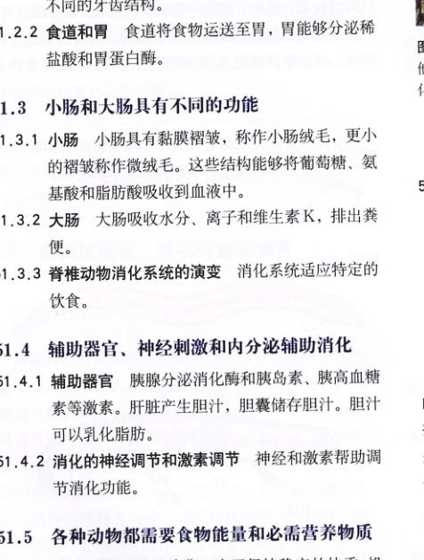
图 51.1 动物是异养生物 所有动物为了生存都要以植物或其他动物为食。这只花栗鼠脸颊处的坚果将成为它的食物，并转化成机体的组织、能量和废物。
植物和光合生物自身可以把无机物合成为自身所需的有机物。因此，它们属于自养生物，能够自己独立维持自己的生活。动物属于异养生物，它们所需的有机物是从其他生物体中获得的（图 51.1）。异养生物摄入的大分子只有消化成小分子才能被机体所吸收。动物利用这些吸收的消化产物提供细胞呼吸作用所需的物质，或是合成组织所需的生物大分子。动物进行消化的过程是本章的重点。
Page 2 / 原始页码 986
51.1 动物的消化系统为细胞同化作用提供原料
51.1.1 消化系统的类型
异养生物根据食物来源的不同可分为三类：只以植物为食的动物称为食草动物 (herbivore)，例如，牛、马、兔子、麻雀。只以肉为食的动物称为肉食动物 (carnivore)，例如，猫、鹰、鳄鱼、青蛙。还有一类是杂食动物 (omnivore)，既吃动物也吃植物。人就属于杂食动物，猪、熊和乌鸦也属于这一类。
单细胞生物（以及海绵）在细胞内消化食物。其他动物则在细胞外的消化腔内进行消化作用。消化腔与动物的外环境相通。消化酶被直接释放到消化腔内。腔肠动物和扁形动物（如涡虫）的消化腔只有一个开口，同时充当口和肛门。在这种消化系统中没有特化器官，每一个细胞都可以接触到处于不同消化阶段的食物，该消化腔称为消化循环腔 (gastrovascular cavity)（图 51.2）。
当消化道出现独立的口和肛门，食物在消化道中单向运动时，消化道中才出现了特化器官。最原始的消化道出现在线虫（线形动物门）中，这种消化道是一个由上皮组织形成的简单的管状消化管 (gut)。蚯蚓（环节动物门）的消化道已分化出了专门负责摄食、储存、研碎、消化和吸收等功能的区城。所有的高等动物，包括所有脊椎动物，都表现出类似的特化的消化器官（图 51.3）。
摄入的食物一般都储存在消化道的某个特化区域，或者先通过物理方法将食物研碎成小块。研碎食物的过程一般是通过牙齿的咀嚼（在很多哺乳动物的口中）或小砂石的研磨（在蚯蚓和鸟类的砂囊中）实现的。之后再通过化学消化将多糖、蛋白质和脂肪分解成它们的最小亚单位。化学消化时一般发生水解反应，主要生成单糖、氨基酸和脂肪酸。这些化学消化的产物通过消化道上皮进入血液，这一过程称为吸收。任何食物中的分子如果不被吸收，就不能被机体利用。消化后的残渣从肛门排出体外。
51.1.2 脊椎动物的消化系统
人和其中脊椎动物的消化系统包括管状的消化道和辅助消化器官（图 51.4）。消化道的起端是口和咽，它们是口腔和鼻腔共同的通道。咽与食道相通，食道是一个肌肉的管道，在其中进行一些初步的消化。食物经过胃，进入小肠的前段，其中有很多消化酶，对食物继续进行消化。消化的产物通过小肠壁进入血液。小肠将食物剩余的部分送入大肠，大肠吸收其中的水分和矿物质。除哺乳动物以外，多数脊椎动物的食物残渣经大肠排出后被送入泄殖腔中（见图 51.3），泌尿系统和生殖系统的产物同样也被排入其中。哺乳动物中尿生殖系统的产物与大肠的粪便完全分开，后者进入直肠，从肛门排出。
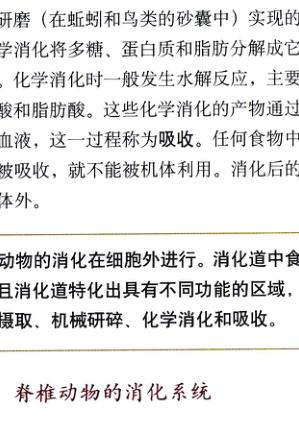
图 51.2 水螅（一种腔肠动物）的消化循环腔 由于消化腔只有一个开口，口即是肛门，所以消化腔中不可能特化出参与胞外消化的器官。
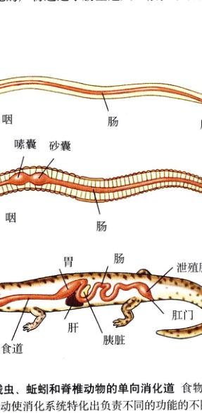
图 51.3 线虫、蚯蚓和脊椎动物的单向消化道 食物在消化道中的单向运动使消化系统特化出负责不同的功能的不同区域。
Page 3 / 原始页码 987
一般来讲，肉食动物的肠道都要短于同等体形的食草动物。短的肠道对于食肉动物是足够的，但是食草动物要摄入大量难以消化的植物纤维素。除了具有长而盘绕的小肠外，一些以草和其他植物为食的反刍动物 (ruminant)（如牛）还具有多室的胃，其中还有一个特殊菌群协助消化纤维素。其他的食草动物，包括兔和马，则在大肠起始处的袋状盲肠 (cecum) 中进行纤维素的消化（在菌群的参与下）。
辅助消化器官（本章后面将详细介绍）包括肝脏、胆囊和胰腺。肝脏分泌胆汁 (bile)，这是一种绿色的液体，能够乳化脂肪，而胆囊则用来储存和浓缩胆汁。胰腺能够分泌胰液 (pancreatic juice)，其中包含消化酶和碳酸氢盐。胆汁和胰液都将排入小肠前段，协助消化。
脊椎动物的管状消化道具有多层结构（图 51.5）。消化管道的最内层表皮是黏膜。而在它外面是由结缔组织组成的黏膜下层。再向外是肌肉层，由双层平滑肌组成。内侧的一层具有环形的走向，而外侧的一层是成纵向排列的。消化道的最外层还有一层结缔组织，称为浆膜 (serosa)。神经在黏膜下层中相互盘绕，成神经丛 (plexus)，具有调节消化道活动的功能。
51.2 食物被摄取、吞咽并运送到胃
51.2.1 口和牙齿
不同种类脊椎动物中消化系统的特异性反映了这些动物不同的生活方式。鱼类的咽部较大，具有鳃裂，而呼吸空气的脊椎动物咽部相对要小很多。许多哺乳动物具有牙齿（图 51.6），通过咀嚼 (mastication) 将食物研碎，并与分泌液混合。鸟类没有牙齿，它们在两个室的胃中将食物研碎（图 51.7）。其中的一个室是砂囊，鸟类通过肌肉运动将吞入的小石子和食物在一起搅拌。搅拌过程将种子和植物中难于消化的成分磨碎成易于消化的小块。
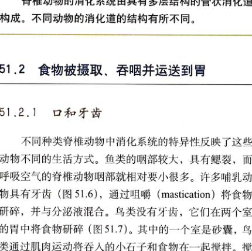
图 51.4 人的消化系统 和所有具有胎盘的哺乳动物一样，人没有泄殖腔，消化道经直肠开口于肛门。
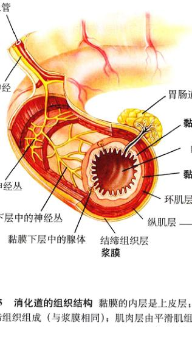
图 51.5 消化道的组织结构 黏膜的内层是上皮层；黏膜下层由结缔组织组成（与浆膜相同）；肌肉层由平滑肌组成。
Page 4 / 原始页码 988
1) 脊椎动物的牙齿
食肉哺乳动物具有表面不平整的锐利的牙齿。这种牙齿适于切割和撕咬。食肉动物经常将捕到的猎物撕成小块而不需咀嚼，这是因为消化酶能够直接作用于动物细胞（回忆一下猫和狗是如何吞咽食物的）。相比之下，像牛和马之类的食草动物就必须要在消化之前将植物组织的纤维素细细磨碎。所以，这类动物具有大而平，且具有复杂起皱的适于研磨的牙齿。
人的牙齿既适合于咀嚼植物，也适合咀嚼肉类。若仅对牙齿进行观察，从正面看，人是食肉动物；从背面看，人是食草动物（图 51.8）。人上下颌的前端的4颗像凿子一样的牙齿十分锋利，称为门齿 (incisor)，用来切割食物。门齿两侧的尖利的牙齿称作犬齿 (cuspid)，用来撕咬食物。在犬齿后面是2颗前臼齿 (premolar) 和 3 颗臼齿 (molar)，它们具有平而坚硬的表面，用来研磨和碾碎食物。儿童只有 20 颗牙齿，这些乳齿将在儿童时期脱落，并被 32 颗恒牙所代替。
2) 口腔
在口腔中，舌将食物与一种黏液——唾液混合。人具有三对唾液腺 (salivary gland)，它们将唾液通过黏膜层中的管道分泌到口腔中。唾液能够润湿食物，使食物便于吞咽，并且确保食物不会在通过食道时磨损食道中的组织。唾液中含有一种水解酶，称作唾液淀粉酶 (salivary amylase)，它能促使淀粉水解为一种二糖——麦芽糖。这种消化在人类中并不明显，因为人们通常不会长时间地在口腔中咀嚼食物。
图 51.6 一般脊椎动物牙齿的模式图 根据食性的不同，如食肉、食草和杂食，不同的脊椎动物的牙齿从这一般的模式中进一步特化。
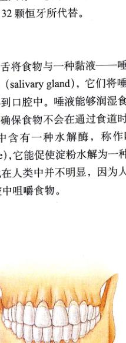
图 51.7 鸟类将食物储存在嗉囊中，并在砂囊中进行研磨 鸟类没有牙齿，但是具有一个肌肉质的砂囊，它的运动能够磨碎食物。鸟类将一些沙粒或小石子吞入砂囊中。食物在进入肠之前要在砂囊中被磨碎。
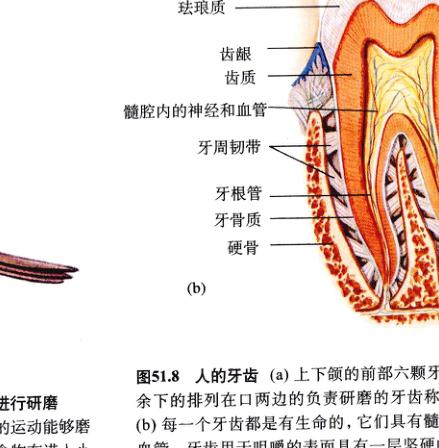
图 51.8 人的牙齿 (a) 上下颌的前部六颗牙齿是犬齿和门齿。余下的排列在口两边的负责研磨的牙齿称为前臼齿和臼齿。(b) 每一个牙齿都是有生命的，它们具有髓，其中包括神经和血管。牙齿用于咀嚼的表面具有一层坚硬的釉质，里面包裹着稍软一些的齿质。这些就组成了牙齿的结构。
Page 5 / 原始页码 989
唾液的分泌作用受神经系统控制。在口腔中没有食物时，唾液分泌速度大约保持在每分钟 0.5 ml。这种持续的分泌能够保持口腔中的湿度。当开始进食时，口腔中的食物可以刺激味觉感觉神经元，使它向大脑发出冲动，大脑再刺激唾液腺，使唾液分泌速度加速。其中最有效的刺激是酸刺激。例如，柠檬酸可以使唾液分泌速度增加 8 倍。视觉、听觉以及食物的气味能够明显地刺激狗的唾液分泌，但是对人而言，联想和谈论美食对人的刺激更为有效。
当准备吞咽食物时，舌将食物移至口的后部。在哺乳动物中，当软腭上举，紧贴咽部时，食物就被吞咽下去了（图 51.9）。软腭的移动挡住了鼻腔的入口，防止食物误入鼻腔。软腭对咽部的压力引发了一个自发的、自主反射。在这个反射中，压力刺激了咽部壁中的神经元，这些神经元将冲动传至大脑的吞咽中枢。于是运动神经元中的电冲动刺激肌肉收缩，使喉 (larynx) 上提，推动声门 (glottis)（喉部向呼吸道的开口），使其被一个称作会厌 (epiglottis) 的盖状组织所遮盖。这一系列的动作使食物不会进入呼吸道，而是直接进入食道。
51.2.2 食道和胃
1) 食道的结构与功能
被吞咽的食物所进入的肌肉质的管道称为食道。食道连接咽部和胃。成人的食道长约 25 cm，其上端三分之一包绕着骨骼肌，能够在意识的控制下主动吞咽食物；而下端的三分之二则由不受意识控制的平滑肌所组成。在吞咽中枢刺激下，食道肌肉连续地呈波状顺次收缩，将其中的食物运送至胃中。这种有节奏的波状肌肉收缩称作蠕动 (peristalsis)（图 51.10），这使人和其它脊椎动物在倒立的时候也一样可以吞咽食物。
在很多脊椎动物中，食物通过食道运送至胃的过程受到食道中环状平滑肌 [又称括约肌 (sphincter)] 的控制。括约肌在食物对它的压力作用下扩张。括约肌的收缩使胃中的食物不会倒流入食道中。啮齿动物和马具有这类括约肌，所以食物就不会从胃中返出；而人就缺少这类括约肌，所以食物就可能返出。但是，人的食道除在吞咽时都是封闭的。
2) 胃的结构和功能
胃（图 51.11）是消化道中的囊状部分。胃的内表面具有褶皱，在空腹的时候会发生折叠；而在充满食物时会像充气的气球一样膨胀。因此，人的胃在空的时候只有 50 ml，但在充满食物时最大可达 2~4 L。有些非群居的游猎的食肉动物，为了生存它们的胃可以更大程度的扩张。
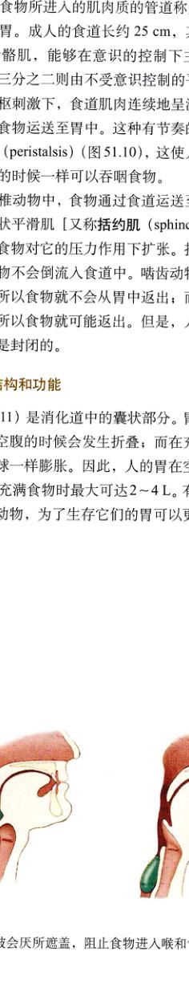
图 51.9 人的咽、腭和喉 食物进入咽后，软腭上举阻止食物进入鼻腔；喉部上提，被会厌所遮盖，阻止食物进入喉和气管（呼吸系统的通风孔）。
Page 6 / 原始页码 990
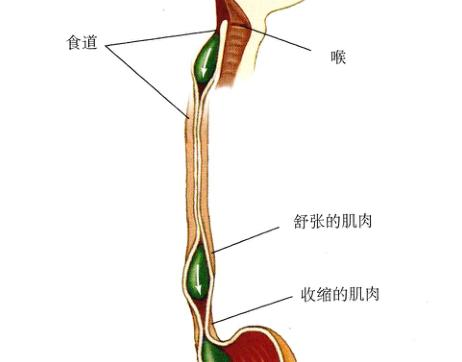
图 51.10 食道和食道的蠕动 食物进入食道后，有节奏的波状肌肉收缩将食物推向胃部。这种运动方式称为蠕动。
3) 分泌系统
胃具有一层额外的平滑肌用来搅拌食物，并使食物与胃液 (gastric juice) 充分混合。胃液是一种酸性分泌物，由黏膜中管状的腺体分泌（图 51.11）。这种外分泌腺具有两种分泌细胞：壁细胞 (parietal cell) 和主细胞 (chief cell)。壁细胞分泌盐酸 (HCl)，而主细胞分泌胃蛋白酶原 (pepsinogen)——一种在强酸性条件下被激活的蛋白水解酶。这种低 pH 环境是由盐酸引起的。被激活的胃蛋白酶原在特殊的位点被剪切，生成一种更强的蛋白酶，称为胃蛋白酶 (pepsin)。细胞先分泌一种没有活性的酶，然后在细胞外转化为高活性的酶，这一过程保护了主细胞自身不会被消化。值得注意的是，只有蛋白质在胃中被部分消化，而糖和脂肪却没有被消化。
4) 胃酸的作用
人体每天产生大约 2 L 的稀盐酸和其他胃分泌物，这些就是胃中所具有的酸性溶液。该溶液的浓度约为 10 mol/L，pH 约为 2。而血液的 pH 为 7.4，因此胃液中酸 (H⁺) 的浓度约为血液的 25 万倍。胃中较低的 pH 环境引起食物中的蛋白质变性，使蛋白质更易于消化，并且这种强酸性条件能够使胃蛋白酶保持较高的活性。胃蛋白酶只是将食物中的蛋白质切割成较短的肽链，而对食物的彻底消化是在食物混合物进入小肠后进行的。由部分消化的食物和胃液组成的混合物称为食糜 (chyme)。
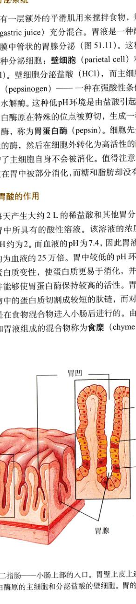
图 51.11 胃和十二指肠 幽门括约肌控制食糜进入十二指肠——小肠上部的入口。胃壁上皮上遍布着凹陷，其中包含具有分泌盐酸和胃蛋白酶原的胃腺。胃腺包括黏液细胞、分泌胃蛋白酶原的主细胞和分泌盐酸的壁细胞。胃的凹陷是胃腺的开口。
Page 7 / 原始页码 991
胃中的酸性溶液也能够杀死大部分随食物摄入的细菌。有少部分细菌能够在胃中存活并且好地进入小肠，在其中生长繁殖，尤其是在大肠之中。事实上，大多数粪便的主要成分之一。正如下文将要谈到的，牛和其他反刍动物的消化道中的细菌，在这些哺乳动物消化纤维素的过程中起着至关重要的作用。
5) 溃疡
偶尔分泌过多的胃酸可能会将胃壁腐蚀，称作胃溃疡 (gastric ulcer)。这种溃疡是很少见的，因为胃黏膜的上皮细胞表面被一层碱性的黏液所保护，而且如果有的上皮细胞受到损坏，其他的细胞将通过细胞分裂很快地将其更新（胃上皮细胞 2~3 天就能够全部更换一次）。90% 以上的胃肠道溃疡属于十二指肠溃疡 (duodenal ulcer)。当过量的酸性食糜进入十二指肠，而胰腺又不能被碱性溶液所中和时，就会形成十二指肠溃疡。幽门螺杆菌 (Helicobacter pylori) 的感染会削弱黏膜屏障对自消化作用的抵抗力，使溃疡的易感性增强。其实，对于这种感染，现代抗生素疗法能够减轻溃疡的症状，甚至将其完全治愈。
胃的壁细胞除了分泌盐酸以外，还能够分泌一种内因子 (intrinsic factor)，它是肠道吸收维生素 B₁₂ 所需的一种多肽。由于这种维生素是机体产生红细胞所必需的，所以，缺乏足够内因子会引起一种贫血（血红细胞数量少）——恶性贫血 (pernicious anemia)。
6) 胃排空
食糜通过幽门括约肌离开胃进入小肠。在小肠中，糖、脂肪和蛋白质被最终消化为氨基酸和葡萄糖等，并被吸收进入血液。食糜中只有部分水分以及阿斯匹林和酒精等物质通过胃壁被机体吸收。
51.3 小肠和大肠具有不同的功能
51.3.1 小肠
1) 小肠中的消化
小肠的消化能力是有限的，其消化过程也需要消耗一定时间。因此，为了保证消化的效率，应该让保持相对少量的食糜不断地从胃中进入小肠。胃和肠的活动的协调是通过神经信号和激素信号调节的。这将在后面进行介绍。
在人的体内，小肠的长度约为 4.5 m，而在尸体中，由于肌肉都处在松弛状态，小肠的长度可达 6 m。小肠的前 25 cm 称为十二指肠 (duodenum)，其余的部分又被分为空肠 (jejunum) 和回肠 (ileum)。十二指肠接收来自胃的酸性食糜、来自胰腺的消化酶，以及来自肝脏和胆囊的胆汁。胰液中的酶消化食物大分子，将其切割成小的片段。这一过程主要发生在十二指肠和空肠。
小肠内表面覆盖着一层细小的指状褶皱，称为绒毛 (villi)（图 51.12）。而且每一个排列成绒毛的上皮细胞的顶表面（面向消化道的一侧）都具有细胞膜的褶皱结构，形成细胞质的延伸，称为微绒毛 (microvilli)。这种结构非常细微以至于只有在电子显微镜下才能清楚地观察到（图 51.13）。在光学显微镜下，微绒毛好像刷子的刷毛，因此小肠内表面上皮又被称为刷状缘 (brush border)。
绒毛和微绒毛大大地增加了小肠的表面积。在人体中，小肠的表面积高达 300 m²！消化产物通过这个巨大的表面，被人体所吸收。微绒毛同样参与消化，因为有许多消化酶正是镶嵌在上皮细胞的细胞膜上，而且它们的活性中心向食糜一方暴露（图 51.14）。这些酶包括能够分解乳糖和蔗糖等二糖的酶（表 51.1）。许多成年人体内不具有这种乳糖酶 (lactase)，不能消化牛奶中的乳糖，一般情况称作乳糖不耐性 (lactose intolerance)。至此，这些刷状缘酶 (brush border enzyme) 完成了始于十二指肠从胰腺的酶作用开始的食物消化过程。
2) 小肠内的吸收
蛋白质和多糖消化产生的氨基酸和单糖通过刷状缘进入小肠上皮细胞（图 51.15）。随后，它们转移到上皮细胞的另一侧，穿过细膜进入小肠绒毛中的毛细血管。这些消化产物在血液中通过肝门静脉运送至肝脏。门静脉 (portal) 这个名词指的是一种血管的特殊排布，只有在少数情况下才能观察到。在门静脉处一一个器官（即肝脏）位于另一个器官（即小肠）的“下游”。肝脏接收从小肠系膜血管流出的血液中所携带的分子。由于肝脏是消化产物进入血液后流经的第一个器官，因此肝脏能够对血液中营养物质的浓度进行调节。
Page 8 / 原始页码 992
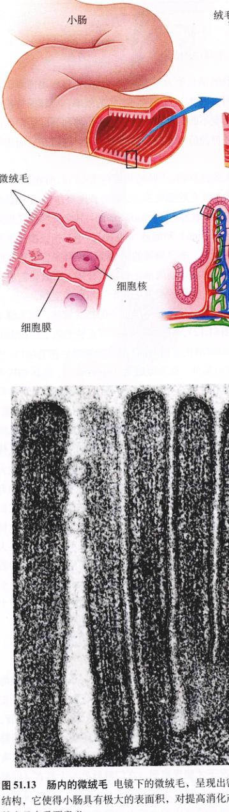
图 51.12 小肠 小肠的横截面；小肠绒毛和上皮细胞微绒毛放大图。
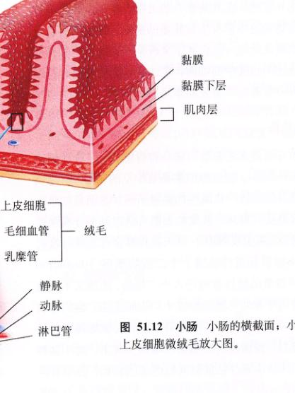
图 51.13 肠内的微绒毛 电镜下的微绒毛，呈现出密集的丛状结构，它使得小肠具有极大的表面积，对提高消化产物的吸收效率具有重要意义。
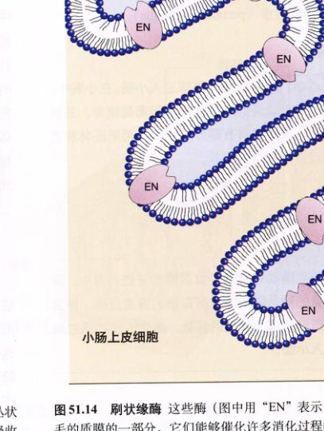
图 51.14 刷状缘酶 这些酶（图中用“EN”表示）是小肠微绒毛的质膜的一部分，它们能够催化许多消化过程的最终反应。
Page 9 / 原始页码 993
表 51.1 消化酶
| 位 置 |
酶 |
底 物 |
消化产物 |
| 唾液腺 |
淀粉酶 |
淀粉、糖原 |
二糖 |
| 胃 |
胃蛋白酶 |
蛋白质 |
短的肽链 |
| 小肠（刷状缘） |
肽酶 |
短的肽链 |
氨基酸 |
|
核酸酶 |
DNA、RNA |
糖、核酸碱基 |
|
乳糖酶、麦芽糖酶、蔗糖酶 |
二糖 |
单糖 |
| 胰腺 |
脂酶 |
三酰甘油 |
脂肪酸、甘油 |
|
胰蛋白酶、糜蛋白酶 |
蛋白质 |
肽链 |
|
脱氧核糖核酸酶 |
DNA |
核苷酸 |
|
核糖核酸酶 |
RNA |
核苷酸 |
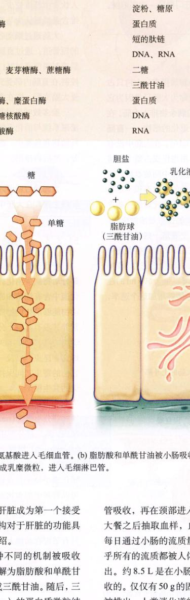
图 51.15 消化产物的吸收 (a) 单糖和氨基酸进入毛细血管。(b) 脂肪酸和单酰甘油被小肠吸收，并在小肠上皮细胞中转化为三酰甘油。这些三酰甘油被蛋白质包裹，形成乳糜微粒，进入毛细淋巴管。
肝门静脉 (hepatic portal vein) 的存在，肝脏成为第一个接受几乎全部消化产物的器官。这种结构对于肝脏的功能具有重要意义，具体将在后文详细介绍。
脂肪消化的产物则是通过一种不同的机制被吸收（图 51.15b）。脂肪（三酰甘油）水解为脂肪酸和单酰甘油，进入小肠上皮细胞，并重新形成三酰甘油。随后，三酰甘油与称作乳糜微粒 (chylomicron) 的蛋白质微粒结合。乳糜微粒并不进入肝门静脉循环，而是被毛细淋巴管吸收，再在颈部进入静脉。如果在顿摄入高脂肪的大餐之后抽取血样，血浆将由于乳糜微粒而变得浑浊。
每日通过小肠的流量是十分惊人的：约 9 L。但是，几乎所有的流质都被人体所吸收，而不是以粪便的形式排出。约 8.5 L 是在小肠吸收的，还有 350 ml 是在大肠吸收的。仅仅有 50 g 的固体和 100 ml 的液体以粪便的形式被排出。人类消化道的流质吸收效率一般接近 99%，这已经是一个很高的效率了。
Page 10 / 原始页码 994
消化首先发生在十二指肠，在胰液酶的参与下进行。小肠为吸收提供了巨大的表面积。食物中的葡萄糖和氨基酸被小肠吸收，并进入肝门静脉，流向肝脏。食物中的脂肪进入淋巴系统。
51.3.2 大肠
大肠，或结肠 (colon)，比小肠短得多，大约只占据了消化道的最后一米；之所以被称为大肠是因为它的直径比较大。小肠直接将消化的剩余物排入大肠。在小肠与大肠的连接处，保留着两个退化的结构——盲肠 (cecum) 和阑尾 (appendix)（图 51.16）。在大肠中没有任何消化发生，并且大肠的吸收面积积不足小肠的 1/30。虽然钠、维生素 K 和细菌新陈代谢的一些产物在大肠被吸收，但是大肠最主要的作用是浓缩废物。在大肠中，一些未被消化的成分，主要是些细菌碎片和纤维素，被压紧并储存在其中。许多细菌在大肠中生存和繁殖，过量的细菌随同废物一起排出，这些废物称做粪 (feces)。结肠中的细菌发酵以每天 500 ml 的速率产生气体。食用豆类和一些蔬菜能够增加这个速率，因为这些植物未消化的部分（纤维）进入大肠，为发酵提供了大量的底物。
人的结肠适于处理纤维含量较高的食物。一般美国人饮食中纤维较少，食物在结肠中通过较慢，食物中纤维含量低被认为与美国人结肠癌发病率高有关。
大肠通过蠕动收缩将粪便压紧，送入一个称为直肠的短管道。通过直肠，粪便经肛门排出体外。两组括约肌控制粪便通过肛门。第一组由平滑肌组成，不受意识控制，在直肠内部受到压力时扩张；第二组由横纹肌组成，受大脑支配，能在意识控制下延迟排粪。
除多数哺乳动物以外，其他脊椎动物的生殖系统、泌尿系统与消化系统共同开口于一个泄殖腔。在有些爬行动物和鸟类中，泄殖腔先从粪便和尿中吸收一部分水分，然后再排出。
51.3.3 脊椎动物消化系统的演变
纤维素是一种多糖，它是植物主要的结构组成。大部分动物缺少消化纤维素所必需的酶。但有些动物的消化道中含有细菌和原生动物，它们能将纤维素转化为动物能够消化的物质。虽然胃肠道里的微生物对人的营养并没有起到十分重要的作用，但是它对于许多其他动物的营养却是至关重要的因素。这些动物包括白蚁和蟑螂等昆虫，以及一些草食性哺乳动物。这些微生物与它们的寄主之间保持着互利的关系，这也提供了一个完美的共生模型。
牛、鹿和其他反刍动物都具有大而分室的胃（图 51.17）。第一部分由瘤胃 (rumen) 和一个小的——网胃 (reticulum) 组成；第二部分则由另外两室：瓣胃 (omasum) 和皱胃 (abomasum) 组成。瘤胃容积约为 50 加仑，作为一个发酵室，细菌和原生动物在其中将纤维素和其他大分子转化为小分子化合物。瘤胃在这个4个胃中位于最前面，它可以将其中的食物返回动物口中重新咀嚼，这种行为称为反刍 (rumination)。反刍食物被吞咽进入网胃，随后进入瓣胃和皱胃。在皱胃中食物最终与胃液混合。因此，只有皱胃在功能上相当于人的胃。与其他没有瘤胃的哺乳动物（如马）相比，反刍动物的这种消化过程大大提高了对纤维素的消化效率。
马、啮齿类动物和兔类动物对纤维素的消化是通过盲肠中的微生物进行的，这类动物的盲肠都很大（图 51.18）。由于盲肠位于胃的后面，所以反刍不能发生。而啮齿类和兔类动物进化出了另外一种消化纤维素的方法，这种方法的效率不亚于反刍。它们通过吃自己的粪便，使食物再次进入消化道。食物的第二次进入使动物可以吸收在第一次消化过程中盲肠微生物产生养分。如果这种食粪性 (coprophagy) 的动物停止食粪，它们的健康状况将会受到影响。
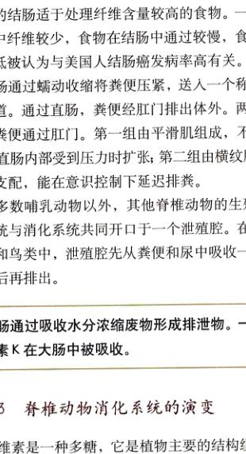
图 51.16 人体小肠与大肠的连接 大肠或结肠始于盲肠。人的盲肠比其他哺乳动物的小。从盲肠中延伸出另一个退化的结构——阑尾。
Page 11 / 原始页码 995
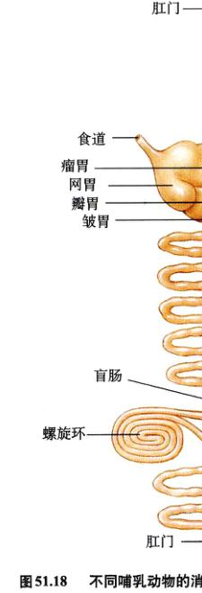
图 51.17 反刍动物的胃 反刍动物，如牛吃入的草和其他植物进入瘤胃。在瘤胃中，食物被部分消化。食物在进入第二个胃室即网胃之前，将被返回口中重新咀嚼。网胃内的食物进入后面的两个胃：瓣胃和皱胃。只有皱胃的功能相当于人的胃，能够分泌胃液。
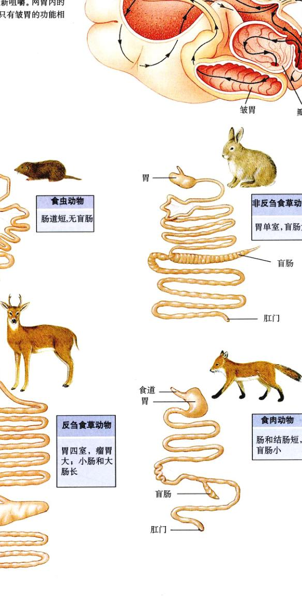
图 51.18 不同哺乳动物的消化系统反映了它们的饮食习惯 食草动物需要较长的消化道，其中具有能够分解植物成分的特化器官。相比之下，蛋白质更加容易消化，因此食虫动物和食肉动物的消化道较短，并且少有特化的囊。
Page 12 / 原始页码 996
纤维素并非植物所能提供的惟一食物，因为肠道微生物还能够产生出其他的物质。蜡是一种大多数爬行动物所不能消化的物质，但是能够被共生于响蜜鴷 (honey guide) 肠道内的细菌所消化。响蜜鴷是一种非洲的鸟类，以蜂巢中的蜡为食。在海洋食物链中，蜡是桡足动物 (copepod)（甲壳纲浮游生物）食物的重要组成部分。许多海鱼和鸟类也可以在共生微生物的帮助下消化蜡。
肠道微生物在寄主新陈代谢中发挥作用的另一例子就是合成维生素 K。所有的哺乳动物都依靠肠道细菌合成这种维生素。这种维生素在凝血过程中起着重要作用。鸟类缺乏这种菌群，所以它们必须从食物中摄入大量的维生素 K。人类在长期服用抗生素之后，这种菌群数量将大大减少，所以也要保证一定量的维生素 K 供应。
51.4 辅助器官、神经刺激和内分泌辅助消化
51.4.1 辅助器官
1) 胰腺的分泌
胰腺 (图 51.19) 是一个大型腺体，位于胃和小肠的连接处，是辅助消化器官之一，负责向消化道提供分泌液即胰液。胰液通过胰导管 (pancreatic duct) 将胰液分泌至十二指肠，因此胰腺是一个外分泌腺。胰液中含有很多的酶，其中包括胰蛋白酶和糜蛋白酶（消化蛋白质），还有胰淀粉酶（消化淀粉），以及脂酶（消化脂肪）。这些酶主要是以没有活性的酶原的形式分泌入十二指肠，随后被小肠刷状缘上的酶激活。胰腺分泌的酶将蛋白质分解为多肽，将多糖分解为短链的糖，将脂肪分解为脂肪酸和其他物质。这些物质的最终消化由刷状缘酶来完成。
胰液中还含有碳酸氢盐，它能够中和来自胃中的盐酸，为十二指肠的食糜创造一个偏碱性环境。这些消化酶和碳酸氢盐是由胰泡细胞 (acini) 分泌产生的。
胰腺除了具有外分泌功能外，还具有内分泌腺的功能。它能够向血液中分泌几种激素，调节血液中的血糖和其他营养水平。这些激素是由胰岛 (islet of Langerhans)——散布在胰腺中的内分泌细胞生成的。胰腺分泌的两种最重要的激素——胰岛素 (insulin) 和胰高血糖素 (glucagon)，将在下面的章节进行讨论。
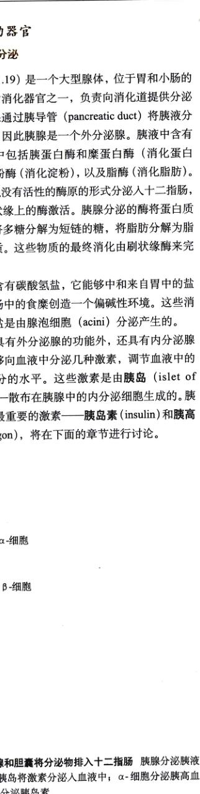
图 51.19 胰腺和胆囊将分泌物排入十二指肠 胰腺分泌胰液进入胰导管。胰岛将激素分泌入血液中；α-细胞分泌高血糖素，β-细胞分泌胰岛素。
Page 13 / 原始页码 997
2) 肝脏和胆汁
肝脏是最大的内脏器官（图 51.4）。成人的肝脏重 1.5 kg，和足球大小类似。肝脏最主要的分泌物是胆汁 (bile)，是由胆色素 (bile pigment) 和胆盐 (bile salt) 组成的液态混合物。在消化过程中，胆汁被送入十二指肠。胆色素不参与消化，它是受损的肝脏中衰老红细胞的代谢废物，最终随粪便排出体外。如果胆色素的外分泌被阻断，这些色素将在血液中积累，引起组织发黄，称为黄疸 (jaundice)。
相反，胆盐在脂肪的消化中起到十分重要的作用。由于脂肪不能溶于水，它们以液滴的形式进入小肠。胆盐具有部分脂溶性，也具有部分水溶性，能够起到表面活性剂的作用，将大的脂肪液滴分散成由小液滴组成的悬浊液。这种乳化过程大大增加了脂肪液滴的表面积，使脂酶能够快速地将脂肪消化。
胆汁在肝脏中生成后，被浓缩并储存在胆囊中，并在其中进行浓缩。含有脂肪的食物进入十二指肠后，引起神经和内分泌反射，刺激胆囊收缩，将胆汁通过胆管送入十二指肠。如果胆管被胆结石 (gallstone)（由沉淀的胆固醇组成）所阻断，胆囊的收缩将会引起右侧肩胛骨处的疼痛。
3) 肝脏的调节功能
由于肝门静脉直接将血液由胃和小肠送入肝脏，肝脏可以在胃肠道吸收的物质被运往全身处之前对它们进行化学处理。例如，摄入的酒精和其他药物被带入肝细胞，进行代谢，这也正是酗酒和滥用药物毁坏肝脏的原因。肝脏还可以排除毒素、杀虫剂和致癌物质等多种有毒物质，将它们转化为无毒的物质。一个重要的例子就是，肝脏能够把肠道细菌产生的有毒的氨转化为无毒的尿素，而尿素可以在血液中以较高的浓度安全地运输。同样，肝脏可以调节很多体内合成的物质的水平。例如，类固醇激素由肝脏转化成活性较低的、水溶性更强的形式。这些分子进入胆汁，从粪便排出，或由血液运送至肾脏，从尿液排出。
肝脏还能制造血液中的血浆蛋白。血浆中蛋白的总浓度是很重要的，因为它必须维持在正常限度之内以保持血液和组织液的渗透压平衡。如果血浆中的蛋白浓度降得过低，如由肝硬化所致，液体将在组织中积存引起水肿 (edema)。
4) 血糖浓度的调节
大脑中神经元的能量主要来自于由血浆运送的葡萄糖的有氧呼吸。因此，保证血糖浓度不要过低是十分重要的。禁食或长时间的体育锻炼都会导致血糖过低。血糖浓度不能过高也是十分重要的，例如，慢性糖尿病 (diabetes mellitus) 患者的血糖浓度就很高，这会导致组织的损坏。
在食用含糖量较高的食物之后，肝脏和骨骼肌将血液中过量的血糖移去，并以糖原的形式储存起来。这一过程是在胰腺中胰岛的 β-细胞所分泌的胰岛素的介导下进行的（图 51.20）。当血糖水平下降，例如在两餐之间，在禁食或锻炼过程中，肝脏将向血液中分泌葡萄糖。这些葡萄糖是通过肝糖原分解为葡萄糖-6-磷酸而产生的，这一过程称为糖原分解 (glycogenolysis)。磷酸基团被移除，而葡萄糖被分泌入血液中。骨骼肌中缺少能够移除磷酸的酶，所以，即使骨骼肌中有糖原储备，也不能分泌进入血液中。肝糖原的分解受到胰高血糖素的刺激。这种激素是由胰腺胰岛中的 α-细胞分泌的（图 51.20）。
如果持续禁食或锻炼，肝脏将其他的分子，如氨基酸和乳酸转化为葡萄糖。这一过程称为糖原异生 (gluconeogenesis)。用于糖原异生的氨基酸是从肌肉蛋白中获得的，这正是长期禁食导致肌肉严重消耗的原因。
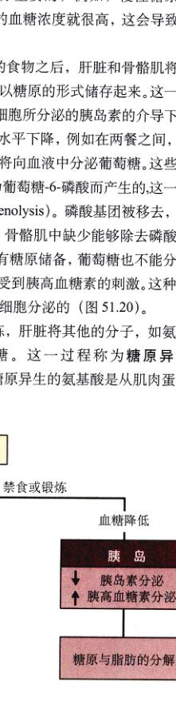
图 51.20 胰岛素和胰高血糖素的作用 用餐之后，胰岛 β-细胞分泌的胰岛素增加，促进糖原和脂肪的沉积。在禁食或锻炼期间，胰岛 α-细胞分泌的胰高血糖素的增加和胰岛素的减少促进糖原和脂肪的水解。
Page 14 / 原始页码 998
51.4.2 消化的神经调节和激素调节
消化系统的活动受神经系统和内分泌系统的共同调节。例如，当看到或闻到食物时，神经系统会刺激唾液和胃液的分泌。当食物进入胃中，食物中的蛋白质刺激胃泌素 (gastrin) 的分泌（表 51.2）。胃泌素是一种由胃分泌的激素，它能够刺激胃腺分泌胃蛋白酶原和 HCl（图 51.21）。分泌的 HCl 使胃液的 pH 下降，从而抑制胃泌素的分泌。胃泌素分泌的抑制将减少 HCl 的分泌量，如此完成一个负反馈环。通过这种方式，胃酸的分泌受到严格的调控。
食糜从胃进入十二指肠会抑制胃的收缩，使得在前一部分食糜被处理之前，不会有其他的食糜进入十二指肠。这种抑制是通过神经反射和小肠分泌的一种抑制胃排空的激素共同实现的。这种激素被称为抑胃素 (enterogastrone)，其实化学结构的认定至今还有争议。十二指肠分泌一种称为抑胃肽 (gastric inhibitory peptide) (GIP) 的激素，它能够抑制胃的活动。这只是多种抑胃素之一，可能并不是最主要的。食糜中的脂肪比其他营养物质刺激肠抑胃素的分泌，脂肪含量较高的食物因此在胃中的停留时间要长于低脂肪的食物。
十二指肠还可分泌另外两种激素。一种是胆囊收缩素 (cholecystokinin, CCK)，和肠抑胃素相似，食糜中的脂肪会促进其分泌。CCK 刺激胆囊的收缩，促进胆汁向十二指肠的释放，脂肪因此被乳化，消化效率也提高了。另一种十二指肠激素是促胰液素 (secretin)。进入十二指肠的食糜的酸性会刺激胰液素的释放，促胰液素刺激胰腺释放碳酸氢盐以中和部分酸性。促胰液素是第一个被发现的激素。
神经和内分泌反应调节消化系统的活动。胃的分泌受到食物和胃泌素的调节。十二指肠分泌的其他激素抑制胃的排空，促进胆囊中胆汁的释放和胰腺碳酸氢盐的分泌。
51.5 各种动物都需要食物能量和必需营养物质
51.5.1 食物能量和能量消费
摄入的食物主要具有两方面功能：提供能量和提供动物不能依靠自身合成的原材料。即使是处在完全休息状态的动物也需要能量维持新陈代谢。在休息状况下能量消耗的最小速率被称为基础代谢速率 (basal metabolic rate, BMR)。对于一个给定的个体，BMR 是相对确定的。人的 BMR 与其年龄、性别和身高、体重有关。
运动会提高新陈代谢速率，所以一天内消耗的能量不仅与 BMR 有关，还与体育活动的多少有关。如果能量的摄入大于能量的消耗，过量的能量将以糖原和脂肪的形式储存起来。由于糖原的储存是有限的，所以继续摄入的过量食物的能量将主要以脂肪的形式储存。摄入的食物能量用千卡或千焦耳 (1 kcal=4.18 kJ) 来度量，食物中所含热量可通过测量其“燃烧”时产生的热量来确定，或者用热计直接测量，或者测量食物在体内消化时产生的热量。热量的摄入可以通过选择不同的饮食来改变，运动中消耗的能量也可以通过选择不同的生活方式来改变。不同人的每日能量消耗从 5 441 ~ 20 928 kJ (1300 ~ 5000 kcal) 不等，这主要是由人的基础代谢速率 (BMR) 和体育运动水平决定。如果摄入的食物能量超过代谢能量，脂肪将会堆积，这对人体是有害的，这种状况称为肥胖 (obesity)。在美国，约 30% 的中年妇女和 15% 的中年男子被纳入肥胖者行列。这意味着他们至少超出同等身高平均体重的 20%。
表 51.2 消化激素
| 激 素 |
类 别 |
来 源 |
刺 激 |
功 能 |
备 注 |
| 胃泌素 |
多肽 |
胃幽门 |
食物进入胃 |
刺激 HCl 和胃蛋白酶原的分泌 |
特别之处在于此激素作用器官与分泌器官是同一器官 |
| 胆囊收缩素 |
多肽 |
十二指肠 |
含脂肪的食糜进入十二指肠 |
刺激胆囊收缩，刺激胰腺分泌消化酶 |
结构上与胃泌素相似 |
| 抑胃肽 |
多肽 |
十二指肠 |
含脂肪的食糜进入十二指肠 |
抑制胃的排空 |
同时刺激胰岛素的分泌 |
| 促胰液素 |
多肽 |
十二指肠 |
酸性食糜进入十二指肠 |
刺激胰腺分泌碳酸氢盐 |
最早被发现的激素 (1902) |
Page 15 / 原始页码 999

图 51.21 激素调节胃的收缩 胃黏膜分泌胃泌素刺激胃蛋白酶原（在胃中转化为胃蛋白酶）和 HCl 的分泌。十二指肠分泌三种激素：胆囊收缩素 (CCK)，刺激胆囊的收缩和胰腺酶的分泌；促胰液素，刺激胰腺分泌碳酸氢盐；肠抑胃素，抑制胃的排空。
食物摄入的调节
多年以来，科学家们一直怀疑脂肪组织能够分泌一种激素过饱因子 (satiety factor)（一种减少脂肪循环的化学物质），因为当将肥胖的小鼠的循环系统通过外科手术与正常小鼠相接后，肥胖的小鼠的体重开始下降。显然，某种能够减肥的激素进入了肥胖的小鼠体内！这种由脂肪组织分泌的过饱因子最近得到确认。它是一种基因的产物，最先在一个称为 *ob/ob* (ob 即 "obese"，意为肥胖，*ob/ob* 代表此小鼠系纯合子) 的小鼠中发现。*ob* 基因已经先后从小鼠和人体内克隆获得，该基因只在脂肪细胞中表达（即产生 mRNA）。这种基因所表达的蛋白，即假设的过饱因子，被称力 leptin。*ob* 小鼠产生一种变异的没有活性的 leptin，导致它们肥胖。当摄入正常的 leptin 后，它们停止进食，体重下降（图 51.22）。
Page 16 / 原始页码 1000
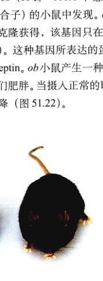
图 51.22 激素 leptin 的摄入使得肥胖小鼠体重下降 这两只小鼠是双胞胎，都是变异的肥胖小鼠的成员。右侧的小鼠摄入激素 leptin，两周之内体重减少了 30%，并且没有明显的副作用。
更进一步的研究表明，肥胖患者体内 *ob* 基因的活性和血液中 leptin 的浓度都要高于较瘦的人，并且肥胖者体内的 leptin 也是正常的。因此，这种现象说明，肥胖是由于大脑对 leptin 的敏感性下降所至，并不是脂肪细胞分泌的 leptin 减少引起的。进一步的研究还在继续，这种研究被认为具有很高的医药和商业价值。
在美国，从 20 世纪 70 年代中期开始，严重的饮食失调开始普遍。其中最常见的是神经性贪食缺乏乏 (anorexia nervosa) 和易饿病 (bulimia)。前一种的患者是自己处于饥饿的状态，而后一种的患者则是暴食之后再呕吐，所以他们的体重能够保持正常。90% ~ 95% 的饮食失调的患者是女性。研究人员估计，美国 2% ~ 5% 的青春期女性和少妇饮食失调。
51.5.2 必需营养物质
许多动物在进化过程中失去了合成一些特殊物质的能力，但是这些物质在代谢过程中依旧起着十分重要的作用。那些不能依靠生物机体自身合成，但又是动物健康生长所必需的，需要从饮食中摄取的物质，称作必需营养物质 (essential nutrient)。
维生素 (vitamins) 包括在必需营养物质当中，这些有机物的需要量是很微少的。人、猿、猴和豚鼠已经失去了合成维生素 C 的能力，如果不通过饮食摄入一定量的维生素 C，它们就会得坏血病（一种潜伏的致命疾病）。人至少需要 13 种不同的维生素（表 51.3）。
有些必需营养物质的需要量相对较大。例如，许多脊椎动物不能合成用来合成蛋白质的 20 种氨基酸中的一种或多种。这些必需氨基酸 (essential amino acid) 必须从食物中的蛋白质中获得。人有 9 种必需氨基酸。素食者必须选择适当的植物以保证必需氨基酸的摄入。
另外，所有脊椎动物都失去了合成不饱和脂肪酸的能力，因此也必需从食物中摄取。另一方面，一些脊椎动物能够合成必需营养物质，而其他的动物种类则不能合成。例如，脊椎动物能够合成胆固醇（类固醇激素的主要成分），但一些食肉昆虫则不行。
食物还能够提供必需矿物质 (essential mineral)，如钙、磷和其他无机物，包括许多微量元素 (trace element)，如锌和钼，它们的需要量很少（见表 2.1）。动物或从植物中直接摄取，或是以食草动物为食来摄取这些痕量元素。
Page 17 / 原始页码 1001
表 51.3 主要的维生素
| 维 生 素 |
功 能 |
来 源 |
缺少后的症状 |
| 维生素 A (视黄醇) |
产生视色素，保养上皮组织 |
绿色蔬菜、奶制品、肝 |
夜盲、皮肤鳞状易剥落 |
| 复合维生素 B |
| B₁ |
细胞呼吸时去除 CO₂ 的辅酶 |
肉、谷类、豆类 |
脚气病、心脏虚弱、水肿 |
| B₂ (核黄素) |
辅酶 FAD 和 FMN 的一部分，FAD 和 FMN 在新陈代谢中起重要作用 |
多种食物 |
皮肤发炎和损坏、眼睛刺激 |
| B₃ (烟酸) |
辅酶 NAD⁺ 和 NADP⁺ 的一部分 |
肝、瘦肉、谷类 |
糙皮病、神经发炎、神志混乱 |
| B₅ (泛酸) |
辅酶 A 的一部分，连接糖与脂肪的代谢 |
多种食物 |
罕见：精神疲劳、失调 |
| B₆ (吡哆醇) |
氨基酸代谢中的辅酶 |
谷类、蔬菜、肉 |
贫血、痉挛、过敏 |
| B₁₂ (氰钴胺) |
生成核酸过程的辅酶 |
红色肉类、乳制品 |
恶性贫血 |
| 生物素 |
脂肪合成和氨基酸代谢的辅酶 |
肉、蔬菜 |
罕见：忧郁症、恶心 |
| 叶酸 |
氨基酸和核酸代谢的辅酶 |
绿色植物 |
贫血、腹泻 |
| 维生素 C |
在生成胶原质、骨质、牙齿，血管结缔组织过程中起重要作用，帮助保持对感染的抵抗力 |
水果、绿色多叶植物 |
坏血病、皮肤和血管的损坏 |
| 维生素 D (钙化醇) |
促进钙的吸收和硬骨的形成 |
乳制品、鱼肝油 |
佝偻病、畸形 |
| 维生素 E (生育酚) |
防止脂肪酸和细胞膜的氧化 |
人造黄油、种子、绿色多叶植物 |
罕见 |
| 维生素 K |
凝血中起重要作用 |
绿色多叶植物 |
严重出血 |
(舒骁 葛月宾 张荣庆 译校)
Page 18 / 原始页码 1002
小 结
51.1 动物的消化系统为细胞同化作用提供原料
- 脊椎动物的消化系统由消化道和辅助消化器官组成。
- 消化道的不同区域具有不同的结构和功能。
51.2 食物被摄取、吞咽并运送到胃
- 食肉动物的牙齿与食草动物的牙齿不相同。
- 食道的收缩蠕动将吞咽的食物送入胃中。
- 胃黏膜的细胞分泌盐酸，活化胃蛋白酶，部分水解蛋白质。
51.3 小肠和大肠具有不同的功能
- 胰液和胆汁进入十二指肠，帮助消化由胃部通过幽门括约肌进入的食糜。
- 小肠中的消化酶将食物分解为能被小肠所吸收的分子。
- 大肠吸收水和离子，也包括一些有机物，如维生素 K，剩余的物质由肛门排出。
51.4 辅助器官、神经刺激和内分泌辅助消化
- 胰液中含碳酸氢盐，可中和食糜的酸性。胆汁包含胆色素和胆盐，用于乳化脂肪。肝脏分解由肝门静脉输入的毒素和激素；肝脏还帮助调节血糖浓度。
- 胃分泌胃泌素，小肠分泌多种激素帮助调节消化系统。
51.5 各种动物都需要食物能量和必需营养物质
- 基础代谢速率 (BMR) 是机体能量消耗的最低水平。
- 维生素、矿物质和必需氨基酸以及基本脂肪酸必须由饮食供应。
问 题
- 组成脊椎动物消化道的各层各是什么？每层各是哪种组织？
- 食肉动物、食草动物和杂食动物的牙齿结构有何不同？
- 什么原因使人能够呕吐？马为什么不能呕吐？
- 壁细胞分泌什么无机物？
- 蛋白质和糖的消化食物是如何通过小肠壁吸收的？它们被吸收后的去向如何？
- 为了利用微生物反刍动物在解剖结构和行为方面有什么特化？
- 胰腺的主要外分泌物是什么？它们的功能是什么？
- 胆盐在消化中的功能是什么？
- 描述胃泌素和促胰液素在消化中的作用。
- 什么是维生素？必需氨基酸与其他氨基酸的区别是什么？
媒体资源
- 实践活动：消化管壁
- 消化概述
- 人的消化
- 消化
- 口到胃
- 胃的消化
- 溃疡
- 技能测验：鸟的消化
- 胃和十二指肠
- 实践活动：小肠的解剖结构
- 肝小叶
- 小肠
- 大肠
- 实践活动：消化系统
- 胆结石的形成
- 技能测验：胰岛素和胰高血糖素的作用
- 生物伦理学实例：易饿病
- “科学”专栏：糖尿病与肥胖的联系